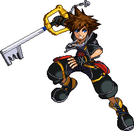

ソラ
ソラは『キングダム ハーツ』シリーズの主人公で、キーを使って闇を打ち払い、友情を守るために戦います。
特徴
- 空中機動力が高い
- 空Nの判定が強くコンボの始動技
- ソラ独特の慣性で復帰狩り阻止や復帰のタイミングをずらしやすい
- 下Bがどれも優秀
- ※ファイガは%稼ぎ、バースト、復帰阻止、復帰
- ※ブリザガは復帰阻止、復帰、サンダガに繋げてバースト
- ※サンダガは対空、バースト
- キーブレードのリーチが短く対剣キャラが不利
- ヒット確認が難しい上に単発火力が低いので高い操作精度が求められる
- スマッシュがリーチ吹き飛ばし共に弱く扱いにくい
- 特段相手を吹き飛ばせる技がないためコンボ撃墜が出来ないとバ難になりやすい
- マジタカミ選手(日本)
強い点
弱い点
有名な使い手